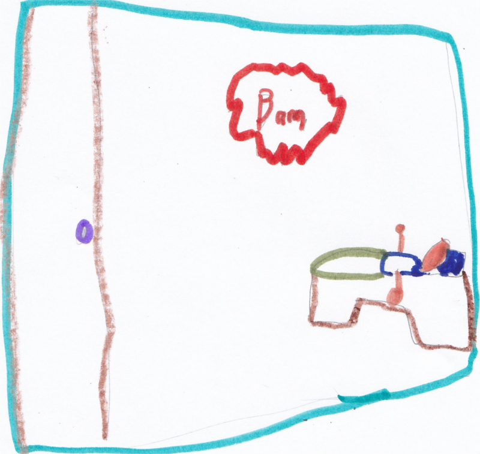
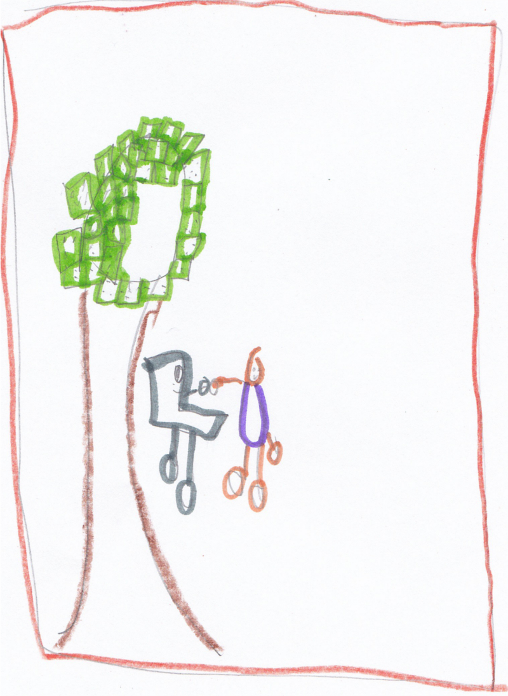
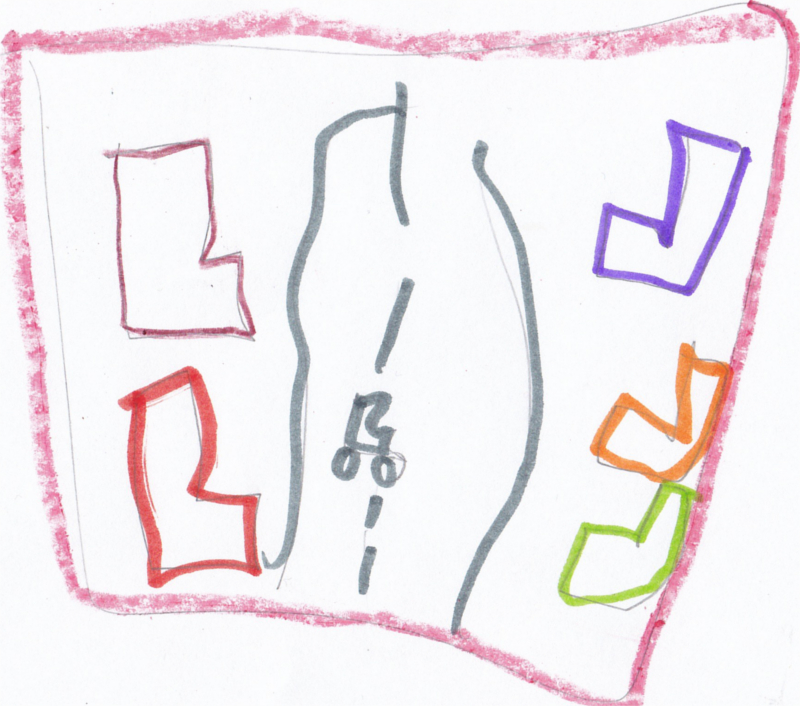

One night, while sleeping, you are woken up by a loud sound.
You get up and walk outside to find yourself in a new strange land. There you meet a strange machine. It's name is Inter, and its a computer with arms and legs.
You ask Inter about this strange land. Inter tells you that you are in Code World. Thinking that it might be a dream, you decide to ask Inter about how can you find your way back home. Inter does not know how, but is willing to help. Both of you head out into Code World to look for a way home.
